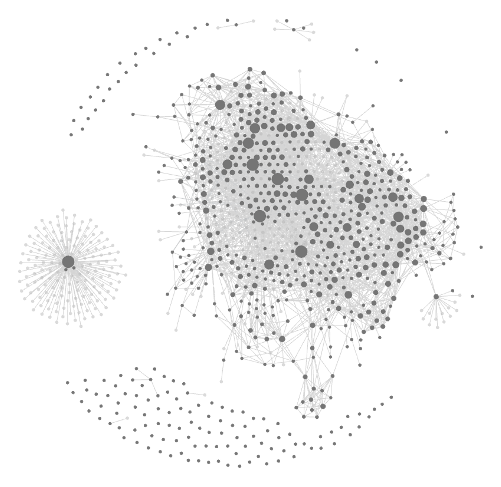

게임 · 에이전트 하네스 · LLM 연구 · 디자인 · 최신 이론 — 다섯 도메인을 중심으로 공부했습니다. 논문·레포·도구를 직접 학습해 지식그래프로 정리했습니다. LLM Wiki로 기록하고, 지식그래프(grep·graphify) 기반 검색으로 실제 작업에 적용합니다.
AI 엔지니어링 지향 — 최신 이론을 학습해 실무에 적용하는 것을 목표로 합니다.

실제 second-brain(Obsidian) 지식그래프 — 노트가 노드, wikilink가 엣지.
최신 실증 연구는 LLM 에이전트 검색에서 lexical(grep)·그래프 기반 검색이 벡터 RAG보다 정확도가 높다고 보고합니다. 그래서 벡터 임베딩 대신 grep과 지식그래프 탐색을 검색 기본값으로 씁니다.
벡터 RAG를 전면 부정하는 것이 아니라, 이 규모·용도에서는 grep·그래프가 더 정확하고 가볍다는 판단에 따른 선택입니다.
각 영역의 최신 자료를 숙지하고 논문을 분석해 지식을 구축해 나갑니다. 아는 만큼 보이는 법이라 생각합니다. AI를 잘 활용하기 위해 기본 역량부터 다집니다.
LLM Wiki 자료 기록 예시 — SSOT 활용
100만 토큰 문서 corpus의 holistic 질문("주요 테마는?")에, 엔티티 지식그래프 + Leiden community 탐지 + map-reduce 요약으로 답하는 RAG. naive top-k 벡터 검색이 약한 corpus 전체 주제·관계 질문을 겨냥한다.
노트 전문 보기 ↗노트마다 출처·저자·연도를 함께 기록합니다(provenance). 요약만 보지 않고 원문을 통독해 정리합니다.
요약만 보고 넘기지 않습니다. 논문·레포는 전문을 통독하고, 도구는 직접 뜯어봅니다. 그리고 거기서 끝내지 않고 실제 작업에 반영합니다.
매일 아침 최신 AI 트렌드를 학습합니다. AI와 함께 재귀개선으로 성장해 나갑니다.
최근 3개월간 178편, 6월에 빠르게 증가했습니다. 매주 자동 발행으로 새 학습이 바로 반영됩니다.
노트의 최종 정리·갱신 시점 기준 (날짜 기록된 178편). 실데이터.
학습 아카이브를 토대로 솔루션을 구축했습니다. 각 카드를 누르면 자세한 내용을 확인할 수 있습니다.
도메인 지식을 엔티티·관계 그래프로 구조화하고 community 요약·경로 질의로 탐색합니다.
텍스트→엔티티·관계 추출로 지식그래프를 구성하고, Leiden community 계층 요약과 bi-temporal 메모리로 corpus 전체의 주제·관계 질의에 답하는 구조.
노트=노드·wikilink=엣지로 vault를 그래프화하고, grep·graphify(커뮤니티 탐지·BFS/DFS 경로 질의)로 인출.
단순 top-k 벡터를 넘어 grep·그래프·다중 신호 기반 검색–생성 파이프라인을 설계합니다.
검색 전 sufficient-context 판정 → lexical(grep)·graph·structure 다중 신호 융합(벡터는 1신호)·self-correcting 인출. 멀티홉·cross-corpus 대응.
grep·그래프 우선 + 충분컨텍스트 게이트, 증분 인덱싱으로 fresh 유지.
모델을 갈아끼워도 작동하는 도구·컨텍스트·게이트 레이어를 설계합니다.
“Agent = Model + Harness” — 모델은 교체 가능, 가치는 도구·컨텍스트 조립·게이트에. 에러=프롬프트 복구 루프, MCP/ACP 도구 연결.
per-turn 규율 주입(MOIM)·adversary 게이트·recipes/subagents·context revision(RTK) 레이어 조립.
스케줄·트리거로 발동하는 자율 작업 루프와 done-gate 자동 검증을 구축합니다.
검증가능 성공기준(done-gate)을 건 자율 루프 — fresh-context 재실행, 실패 시 자동 롤백·재시도, 스케줄·이벤트 발동.
AutoResearch식 실험 루프 + spec→prompt closed-loop + E2E self-healing 검증으로 무인 반복.
헌법·메모리·게이트로 학습이 시스템에 되먹여 스스로 개선되는 구조를 만듭니다.
헌법(불변 규율)·메모리·게이트로 학습→반영 되먹임(RSI), dual-loop로 스킬을 증류·큐레이션해 운영체계가 스스로 성장.
Dispatch→Gate(출처·환각·계약 대조)→Promote→Distill→Curate 회로 + provenance·HITL 스테이징.
모든 뿌리 노트는 Learning Atlas에 공개돼 있습니다.